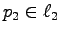
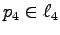
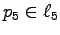
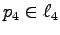
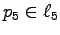

,
,

 met
met
 , which is possible as no conic was tangent to
at .
and, for each
=2,3,4,5 either contain
, which is possible as no conic was tangent to
at .
and, for each
=2,3,4,5 either contain
 or are tangent to .
or are tangent to .
If we now replace
 by a similar nearby hyperbola, then the 204 conics
become 408.
Replacing
 by a nearby hyperbola, give 816 conics.
Continuing with
 gives 1632, and finally replacing
 with
a hyperboloa gives five hyperbolae,
by a nearby hyperbola, give 816 conics.
Continuing with
 gives 1632, and finally replacing
 with
a hyperboloa gives five hyperbolae,
 for which there are
3264 = (25 102) real conics tangent to each .
In this way, the classical problem of 3264 conics can have all of its solutions be real.
for which there are
3264 = (25 102) real conics tangent to each .
In this way, the classical problem of 3264 conics can have all of its solutions be real.